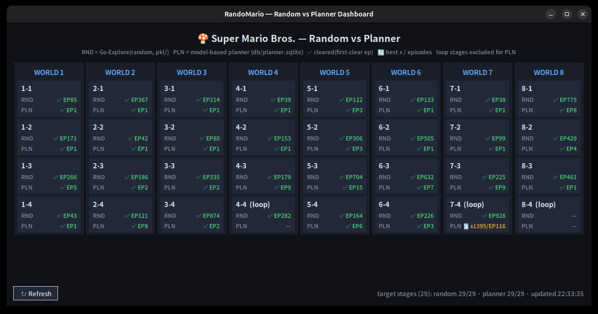
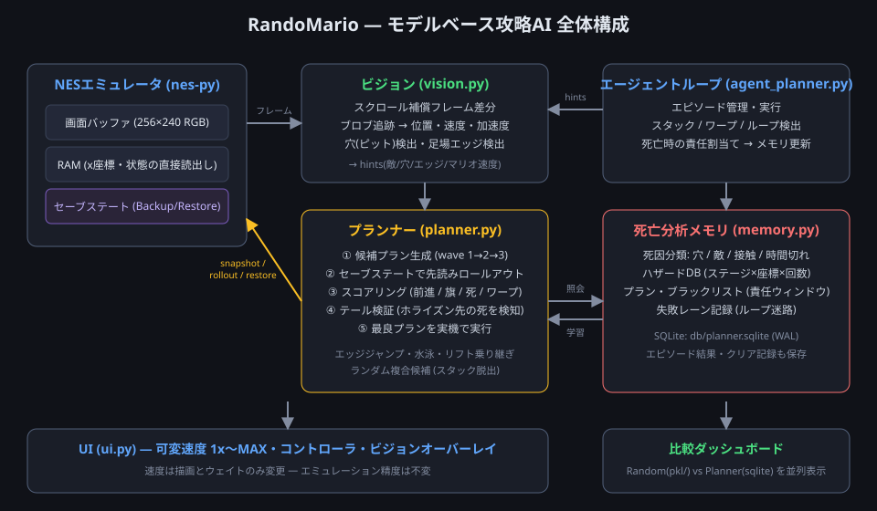
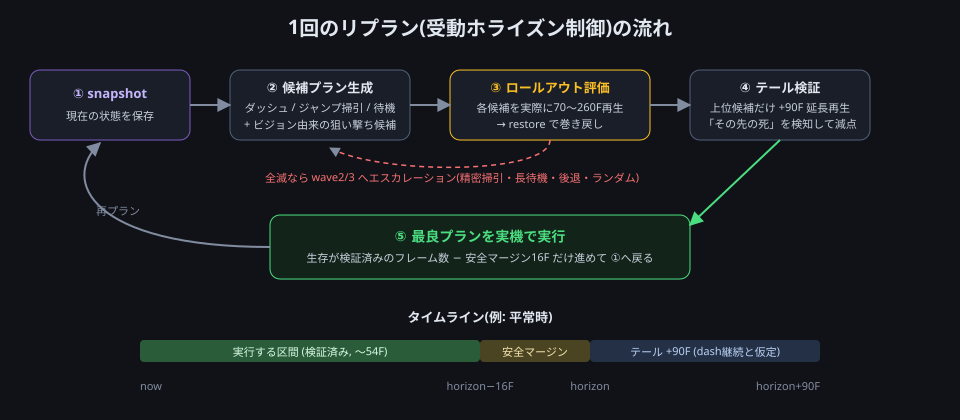
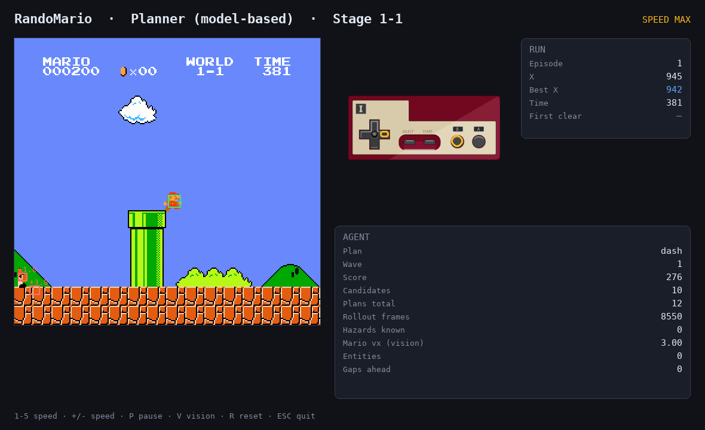
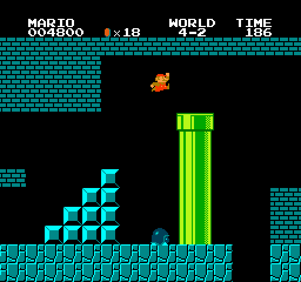
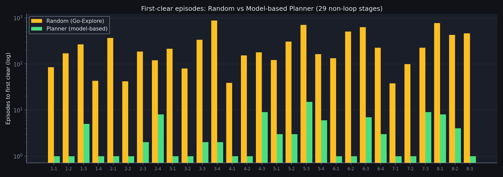

01全体アーキテクチャ

mario/
├── env_utils.py # エミュレータ直結・セーブステート・高速ロールアウト
├── actions.py # アクションセット定義
├── vision.py # 画像からの状態推定
├── planner.py # 候補生成 + ロールアウト評価 (MPC)
├── memory.py # 死亡分析メモリ + 結果DB (SQLite)
├── agent_planner.py # 攻略AIのエピソードループ
├── agent_explore.py # 従来の Go-Explore (ランダム) — 比較用
└── ui.py # 共通 Pygame UI
play.py # 統合エントリポイント
verify.py # 全ステージ並列検証
progress_viewer.py # 比較ダッシュボードステージ固有のロジックは一切書かない。ステージごとの知識は、実プレイの死亡から学習した「ハザードメモリ」としてのみ蓄積される。 だからプランナーは初見のステージでも同じコードで動く。1-1 も、水中の 2-2 も、ファイアバーの城 1-4 も、大穴だらけの 8-1 も、すべて同一アルゴリズムで攻略している。
02心臓部: セーブステート・ロールアウトによるモデル予測制御
「予測モデル」を学習しない、という選択
「過去数フレームから位置・速度・加速度を推定して、次の数十ステップを計画する」を実現する方法は 2 つあります。
- 物理モデル(またはニューラルネット)で未来を予測して計画する
- エミュレータ自体を世界モデルとして使い、実際に未来を再生して計画する
本プロジェクトは 2 のハイブリッドを採用しました。nes-py エミュレータには Backup/Restore という
セーブステート機構が C++ 側に存在し、しかも1秒あたり12万回という事実上ゼロコストで呼べることを実測で確認したからです。
決定論的な NES において、これは「完璧な世界モデル」が手に入ることを意味します。
一方で「どんな候補を試すべきか」の生成には、後述する画像ベースの状態推定を使います。 推定は候補を賢く絞るために、正確なロールアウトは最終判断のために、と役割を分けたハイブリッド構成です。
リプランのサイクル

- snapshot — 現在のエミュレータ状態を保存
- 候補プラン生成 — 今後 70〜260 フレームぶんの入力列を 10〜50 本生成
- 基本形: ダッシュ継続 / ジャンプ長掃引(6〜32F)/ 遅延ジャンプ / 歩き / 待機 / 後退
- ビジョン由来: 「穴の縁で踏み切るジャンプ」「敵との会合点で踏むジャンプ」
- 状況特化: 水泳ストローク、リフト乗り継ぎ、エッジジャンプポリシー
- ロールアウト評価 — 各候補をエミュレータで実際に再生し、
前進距離 + 0.5×最終位置 + 旗ボーナス − 死亡ペナルティ − ワープペナルティで採点。死んだ時点で打ち切り、毎回 restore で巻き戻す - テール検証 — 上位候補だけ、プラン終了後さらに 90 フレーム(ダッシュ継続を仮定)再生。 「プランのすぐ先に隠れた死」(穴への着地、沈む足場)を検知して減点
- 実行 — 最良プランを実機で実行。生存が検証済みのフレーム数から安全マージン 16F を引いた長さだけ進めて、次のリプランへ
全候補が死ぬ場合は wave2(ジャンプタイミングの精密掃引、空中で止まって足場に乗る jumpstop)、
wave3(最長 170F の待機・大きく後退して助走・ランダム複合)へ自動的にエスカレーションします。
スコアリングの小さな工夫
- 死亡は「遅いほどマシ」: ペナルティを生存フレーム数で緩和。全滅時でも「一番粘れる」プランを選ぶ
- ワープゾーン封印: ロールアウト中にワールド番号が変わったら大幅減点。1-2 の天井ルートからワープゾーンに入って「別ステージのゴールでクリア扱い」になる事故を防ぐ
- x が詰まったら高さを評価: 前進できない状況では、足場の上での高度上昇(
+0.4 × Δy)を加点。これが 4-2 の上昇リフト(乗って待たないと進めない)を解いた
03画像からの状態推定(ビジョン)
RAM を読めばマリオや敵の位置は正確に取れますが、要件は「過去数フレームの画像から位置・速度・加速度を推定する」こと。
vision.py は生のフレーム(256×240 RGB)だけから以下を推定します。

スクロール補償フレーム差分
横スクロールゲームでは、画面全体が動くため単純なフレーム差分は使えません。そこで:
- 背景が支配的な帯(y=140〜200)を 0〜8px 水平シフトさせて SAD(絶対差の総和)が最小になるシフト量を求める → カメラのスクロール量
- 前フレームをそのぶんずらしてから差分を取る → 動いているものだけが残る
- 連結成分抽出(OpenCV)でブロブ化し、最近傍マッチングで追跡
各トラックは EMA 平滑化した速度・加速度を持ちます。マリオの識別には 「info の x 変位 − スクロール量 = 画面上の移動量」という運動学的な一致を使い、識別できたらカメラ座標→ワールド座標の較正を更新します。
穴と足場エッジの検出
- 穴(ピット): 空の帯(y=40〜96)の最頻色を背景色とみなし、地面の帯(y=208〜236)が背景色で貫通している列の連なりを穴と判定。地上・地下・城のどのテーマでも動く
- 足場エッジ: マリオの足元の高さで右方向に走査し、背景色が始まる位置を「今乗っている足場の右端」とする。木の上や城の足場など、画面最下段の走査では意味がない場面で効く
これらは hints としてプランナーに渡り、「穴の縁ちょうどで踏み切る」「敵と会合するタイミングで踏む」という狙い撃ち候補の生成に使われます。
04死から学ぶ — ハザードメモリと責任割当て
ロールアウトがあっても死は起きます(ホライズンの外に危険が隠れている場合)。そこで死亡をステージ知識に変換します。
死因の分類
| 死因 | 判定方法 |
|---|---|
pit(落下) | y ビューポートが画面外下 |
enemy(敵) | ビジョンが死亡地点付近に敵トラックを検出 |
contact | それ以外の接触死(ファイアバー等) |
timeout | ゲーム内タイマー切れ |
stuck | 進行不能でエピソード放棄 |
loop | 迷路チェックで巻き戻された(死ではないが記録) |
ハザードメモリの効果
死亡地点は SQLite の hazards テーブルに (ステージ, x座標, 死因, 回数) で蓄積され、次のエピソードからは:
- その地点の 280px 手前から先読みホライズンを 70F → 120F に拡張
- 同じ場所で 2 回死んだら、最初から精密探索 wave2 で計画
責任割当て(blame assignment)
単に「死んだ瞬間のプラン」を出禁にしても学習しません。致命的な選択はもっと前にあるからです (袋小路へのジャンプ → 着地後は何をしても死ぬ → 死亡時に実行していたのは末端の悪あがきプラン)。
そこで死亡時には「死の直前 160 フレーム以内に開始されたすべてのプラン」を
ブラックリスト (ステージ, プラン開始x, 入力列ハッシュ) に登録します。
次のエピソードで同じ場所に来るとそのプランは候補から除外され、エピソードごとに必ず違う選択が試されます。
5-3 では「同じ穴で3回死ぬ → 4回目に突破」という学習カーブがログにはっきり現れました。
05ハマりどころと解決策(失敗談)
この種のシステムは、理屈どおりに動かない箇所にこそ本質があります。代表的な 4 つを紹介します。
1リセットすると必ず 1-1 が始まる
環境はリセット時にタイトル画面をスキップしながらステージ番号を RAM に書き込みます。ところがコンソールリセットでは NES の RAM が保持されるため、
前エピソードのタイマー値が残って「もうゲームは始まっている」と誤判定され、ステージ書き込みがスキップされ、どのステージを指定しても 1-1 がロードされていました。
しかも実ステージとターゲットの不一致で「ワープした」と判定され、プランナーが完全に無効化。
対策はリセット直後にタイマー RAM($07F8-$07FA)をゼロクリアするだけ。
「4 つの異なるステージが全く同じフレーム数で死ぬ」という不気味なログから発覚しました。
2受動ホライズンの「先送りループ」
「47フレーム走ってからジャンプ」というプランを選びつつ、実行は安全のため先頭 12 フレームだけ → リプランするとまた「47フレーム先でジャンプ」が選ばれ…… 永遠にジャンプに到達しない現象。ロールアウトは正確なので 「生存が検証済みの区間は堂々と実行してよい」という原則に切り替えて解決(検証済みフレーム数 − 16F を実行)。
3テール検証が「待機」を優遇するバグ
プラン後の追加再生で死んだ候補を減点する際、当初「総生存フレーム数」でスケールしたため、 ただ長く待つプランほど減点が軽くなる逆インセンティブが発生。 「プラン終了後に何フレーム生き延びたか」でスケールするよう修正しました。
4責任ウィンドウの毒(過剰ブラックリスト)
責任割当てを「死亡地点の手前 320px のプラン全部」にしたところ、手前の穴を正しく越えたジャンプまで出禁になり、 エピソードを重ねるほど下手になる退行が発生(5-3 で最高到達 965 → 658)。 ウィンドウを座標ではなく時間(直前160フレーム)に変えて解決。
「同一条件で同じ死に方を繰り返すログ」は、学習が壊れているサイン。max_x とフレーム数が複数エピソードで完全一致したら、どこかの学習経路が死んでいる。
06特殊地形への対応
水中(2-2, 7-2)
RAM の swim フラグ($0704)で水中を検知すると、候補セットが
ストローク(A を 2F 押して離す)を周期 6〜24F で繰り返す水泳プランに切り替わります。
上昇・立ち泳ぎ・沈下・後退の候補も持ち、どの周期が正解かはロールアウトが決めます。両ステージともエピソード 1 でクリアでした。
広い穴 — エッジジャンプポリシー(クローズドループ候補)
8-1 の大穴は「全力の助走+崖っぷちで踏み切り」が必須で、固定フレーム数の候補では踏切位置が合いません。 そこでロールアウト中の x 座標に反応するポリシー型候補を導入しました:
「(必要なら back px 後退 →)ダッシュ → x がエッジ − margin に達した瞬間にジャンプ hold F」
ロールアウト中に出力した入力列は記録され、採用時はその記録をそのまま実機で再生します(決定論なので完全に一致)。 エッジ位置はビジョンの足場エッジ検出・穴検出から取ります。8-1 はこの仕組み+ハザード学習で 8 エピソードでクリアしました。
リフト・ゴンドラ(3-3, 5-3, 4-2)
- wave3 に「ホップ → 乗って待つ(40/80F)→ ホップ」というリフト乗り継ぎ複合候補
- x が進まないときの高度ボーナス(上昇リフトに乗ることが正当に評価される)
- 上下移動をスタック判定から除外(リフトで上昇中に「進行不能」と誤判定して打ち切っていた)

最後の砦 — ランダム複合候補
決定論的な候補セットには構造的な死角があります(トランポリンのバウンド、変則的な壁登り)。 wave2/3 にはランダムに合成した入力列(右荷重の重み付きサンプリング、4〜26F セグメント)を混ぜます。 ランダムといっても採用前に必ずロールアウトで検証されるので、Go-Explore の多様性を MPC の安全性で包んだ形です。 2-1・6-2 などの膠着はこれが破りました。
07高速化と実行中の可変速度
- エミュレーション実測 約 950fps/コア。ロールアウトは gym のラッパーを全てバイパスし、
_frame_advance()+ RAM 直読み - 平原の早期採択: 危険が何もなく全速前進できる候補が見つかったら、残り候補の評価を打ち切り(候補 1 本・0.07 秒でリプラン完了)
- 速度はいつでも変更可能: 1〜5 キーで 1x/2x/4x/8x/MAX。 速度が変えるのは描画頻度とウェイトだけで、エミュレーションは常に 1 フレームずつ正確に実行(精度に影響ゼロ)。MAX では描画を壁時計 30fps に間引き
- 検証は
verify.pyがステージごとにプロセスを立てて並列実行(SQLite は WAL モードで共有)
08結果

ループ構造のない全 29 ステージをクリア(4-4 / 7-4 / 8-4 はループ迷路のため対象外)。 29 ステージ中 16 ステージがエピソード 1(=初見一発)クリアです。
| ステージ | Random | Planner | ステージ | Random | Planner |
|---|---|---|---|---|---|
| 1-1 | EP85 | EP1 | 5-1 | EP122 | EP3 |
| 1-2 | EP171 | EP1 | 5-2 | EP306 | EP3 |
| 1-3 | EP266 | EP5 | 5-3 | EP704 | EP15 |
| 1-4 | EP43 | EP1 | 5-4 | EP164 | EP6 |
| 2-1 | EP367 | EP1 | 6-1 | EP133 | EP1 |
| 2-2 | EP42 | EP1 | 6-2 | EP505 | EP1 |
| 2-3 | EP186 | EP2 | 6-3 | EP632 | EP7 |
| 2-4 | EP121 | EP8 | 6-4 | EP226 | EP3 |
| 3-1 | EP214 | EP1 | 7-1 | EP38 | EP1 |
| 3-2 | EP80 | EP1 | 7-2 | EP99 | EP1 |
| 3-3 | EP335 | EP2 | 7-3 | EP225 | EP9 |
| 3-4 | EP874 | EP2 | 8-1 | EP775 | EP8 |
| 4-1 | EP39 | EP1 | 8-2 | EP429 | EP4 |
| 4-2 | EP153 | EP1 | 8-3 | EP461 | EP1 |
| 4-3 | EP179 | EP9 |
ちなみに 6-4 は当初「ループステージ」として除外予定でしたが、実際の SMB のループ迷路は 4-4 / 7-4 / 8-4 で、6-4 は普通の城です。 実際に走らせたら 3 エピソードでクリアしました。
09未解決: ループ城 7-4
7-4 は「正しい高さ(レーン)で連続チェックポイントを通過しないと巻き戻される」迷路城です。以下の汎用機構まで実装しました:
- ループ(大きな x 巻き戻し)の検出とハザード記録
- ループ帯では先読みホライズンを 260F に拡張し、巻き戻され自体をロールアウト内で観測して回避
- 巻き戻された際の y レーンプロファイル(x 32px 刻みの高さ列)を記録し、失敗済みレーンと一致する候補を減点 → エピソード内でレーンを系統的に列挙
それでも 100 以上のレーンを試して未突破です。原因は「3 連チェックの正解レーン列への信用割当て」がまだ粗いこと。 チェック単位でレーンを木探索する機構が次の一手だと考えています。
10使い方
# 攻略AIをUI付きで観る(1〜5キーで速度変更、Vでビジョン表示)
uv run play.py --agent planner --stage 1-1
# ヘッドレス最速
uv run play.py --agent planner --stage 8-1 --headless
# ランダム(従来のGo-Explore)
uv run play.py --agent explore --stage 1-1
# 全ステージ並列検証
uv run verify.py
# 比較ダッシュボード(標準ライブラリのみで動作)
python3 progress_viewer.pyまとめ
- エミュレータのセーブステートは最強の世界モデル。予測を学習する代わりに、未来を実際に再生して評価する
- 探索空間は膨大なので、画像ベースの状態推定で候補を賢く絞ることと、死亡からの学習(ハザード+責任割当て)が不可欠
- 受動ホライズン制御には「先送りループ」「テールの死角」「ブラックリストの毒」など理屈では気づきにくい罠が多い。同一条件で同じ死に方を繰り返すログが最重要の観測量だった
ステージ固有のコードを 1 行も書かずに 29 ステージ + 1(6-4)を攻略できたのは、この 3 点の組み合わせによるものです。